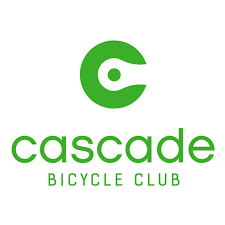

Hi, I'm Mishan! I am a former Product Manager turned computer science student.
I build full-stack web applications from start to finish, from requirements gathering, database and system design, backend API and frontend UI implementation, and deployment to production.
Backend Frameworks: Flask, Django, Node.js, Ruby on Rails
Databases: PostgreSQL, MySQL
Computer Graphics: OpenGL, Canvas, Blender
Tools and Technologies: Git, Docker, AWS, Heroku, Agile Methodology
Projects

I developed a full-stack web application for
Cascade Bicycle Club's Volunteer team. The application
automated manual processes for the team and improved volunteers' experience. Read more about my work with Cascade
here.
React.js
Material UI
Python/Flask
PostgreSQL
Heroku
Procedurally generated Mandelbrot set with its corresponding Julia set.
Canvas API
Vanilla Javascript
Fractals drawing application. Includes the Sierpinski Triangle, the Infinite Corridor, Binary Tree and the Barnsley Fern.